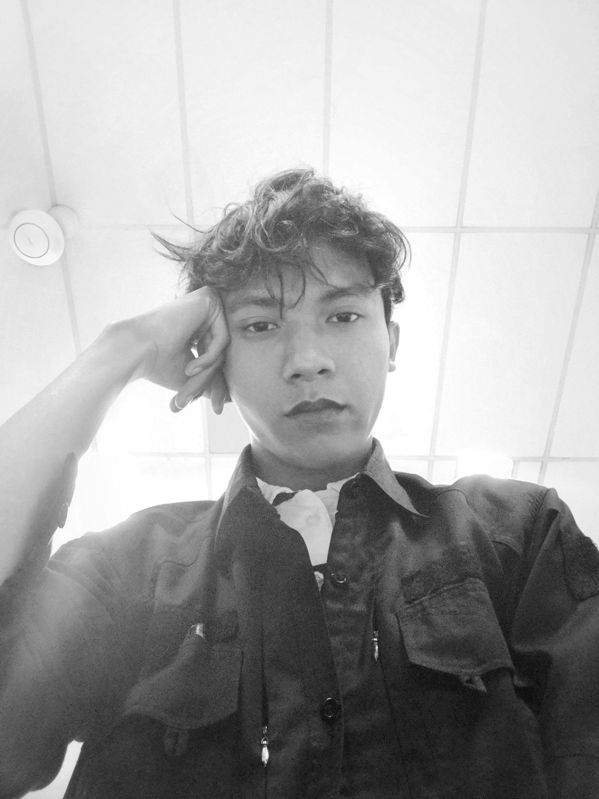

LAW
Rules, institutions, litigation, rights, power.
↗LAW · IDEAS · BUSINESS · DIGITAL · CULTURE
I move between disciplines to understand systems, build things, and turn observations into ideas worth keeping.
ENTER THE ARCHIVE↓A PERSONAL POSITION
Law taught me to look at rules and power. Writing taught me to notice language. Business taught me to understand incentives. Technology taught me to build the interface between an idea and the world.
MULTIPERSPECTIVE
Different lenses. One curiosity.
Rules, institutions, litigation, rights, power.
↗Essays, arguments, literature, observations.
↗Brands, strategy, markets, experiments.
↗Web experiences, interfaces, creative technology.
↗Society, behavior, memory, the things between lines.
↗Researching the space between rules, institutions, power and human behavior.
THINGS I'VE BEEN BUILDING
06 / 06A structured research project exploring abusive litigation patterns, procedural behavior and case-law signals.
A premium editorial web presence for a law practice.
A quiet, adult, minimal direction for an independent hijab brand.
Scroll-driven visual storytelling built around a photorealistic Quran sequence.
Qualitative research into WhatsApp Status as a promotional medium for an UMKM.
Risk, discipline, probability and the psychology of decision-making under uncertainty.
A FEW YEARS IN MOTION
Legal study, forestry law, human rights, legal philosophy.
Essays, brand experiments, UMKM research and independent projects.
Web experiences, creative technology, legal infrastructure and trading systems.
THOUGHTS, OBSERVATIONS & OTHER THINGS
READ / WRITE ↗Where institutional order meets the people inside it.
Why the most interesting questions refuse neat categories.
Reading behavior, memory and rules as parts of the same story.

AZRIEL / 26A LAW GRADUATE WHO NEVER REALLY STAYED INSIDE LAW.
Law graduate from Indonesia. Interested in law, philosophy, business, technology, literature and culture. I like work that sits between categories—and people who are willing to look twice.
THE NEXT THING